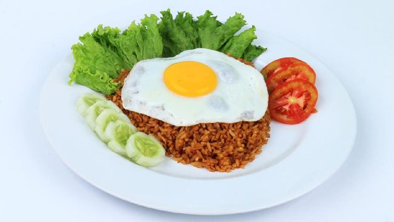

Nasi Goreng
Nasi goreng adalah sajian klasik Indonesia yang terdiri dari nasi yang digoreng hingga beraroma harum dan berwarna kecokelatan.
Biasanya disajikan dengan tambahan seperti telur dadar, potongan ayam atau udang, serta pelengkap seperti kerupuk dan acar.
Nasi goreng merupakan salah satu warisan kuliner Indonesia yang paling terkenal dan diakui secara internasional, menjadi pilihan makanan yang disukai oleh banyak orang di seluruh dunia.
Alat dan Bahan:
- Nasi putih - 2 mangkok
- Telur - 3 butir, kocok lepas
- Daging ayam - 200 gram, potong kotak kecil
- Udang - 100 gram, kupas, belah punggungnya, dan bersihkan
- Bawang putih - 3 siung, cincang halus
- Bawang merah - 5 butir, cincang halus
- Cabai merah besar - 2 buah, iris serong
- Cabai hijau besar - 2 buah, iris serong
- Kecap manis - 2 sendok makan
- Garam - secukupnya
- Merica - secukupnya
- Minyak goreng - 3 sendok makan
- Wajan atau Penggorengan
- Pisau dan Talenan
- Kompor
Cara Memasak:
- Panaskan minyak goreng dalam wajan.
- Tumis bawang putih, bawang merah, cabai merah besar, dan cabai hijau besar hingga harum.
- Tambahkan daging ayam, udang, garam, dan merica. Aduk hingga daging dan udang matang.
- Masukkan telur kocok, aduk hingga telur setengah matang.
- Tambahkan nasi putih dan kecap manis. Aduk rata dan masak hingga nasi terasa panas.
- Sajikan nasi goreng spesial hangat.